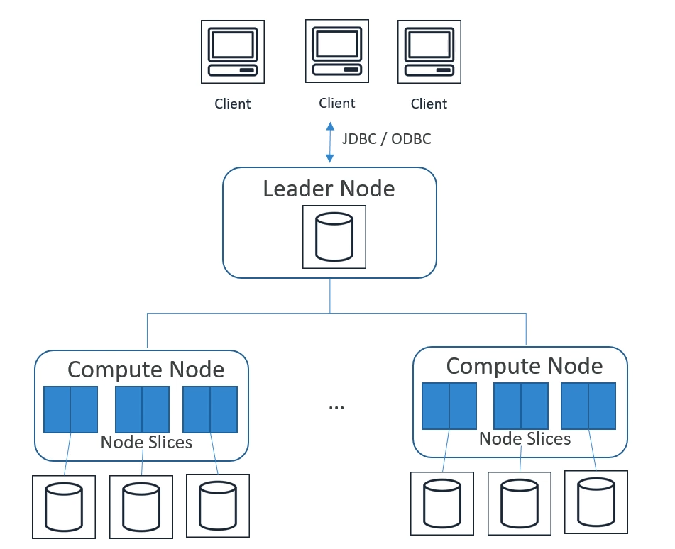

Amazon Redshift
Contents
Amazon Redshift#
What is it#
Fully-managed, petabyte-scale data warehouse.
10-times better performance than other Data Warehouses
massive parallel query execution
columnar storage
designed for OLAP not OLTP
cost-effective (no upfront costs, pay as you go, but still can be very expensive)
SQL, ODBC/JDBC interfaces
scale up or down on demand
builtin replication & backups
monitored via Cloudwatch/Cloudtrail
based on Postgres, expanded by AWS
Use cases#
accelerate analytics workloads
unified data warehouse & data lake (by Redshift Spectrum)
data warehouse modernization
analyze global sales data, store historical stock trade data
analyze other data - ad impressions/clicks/gamin data/social trends
Architecture#
redshift aggregates all objects into cluster
cluster contains nodes
Node types#
leader node#
manages communication between clients and compute nodes (so clients send requests to leader node only)
receives client requests
manages the objects schema
plans query executions
parses requests
develops execution plans
coordinates parallel execution of developed plan
return results to client
compute node / worker#
one or more in cluster
executing commands/steps received from leader node
transmitting data between compute nodes to serve queries
sends intermediate results to leader node
cluster can contain up to 128 compute nodes and one leader node (so it’s not “infinitely scalable”)
compute nodes can be one of below types:
dense storage node = allows for very large warehouses and uses HDDs (low price, lower performance), available two versions with 2TB and 16TB of storage and different number of vCPU and RAM (ds2 family)
dense compute node = allows for very high performance nodes (SSD), have less capacity than compute dense storage node (dc2 family)
every worker node is divided into slices
portion of each node CPU and memory is allocated to each slice
number of slices per node is determined by node size
queries executed by node are split into slices to have more parallel processing so in practice slice executes script and returning results (not the node)

Spectrum#
allows querying exabytes of unstructured data in S3 without COPY to the redshift itself
support
SELECTandINSERTbut doesn’t supportDELETEandUPDATEoperationdo the same type of work like Athena does with AWS Glue Datacatalog (so it can be treated as replacement for Presto)
when creating table in spectrum, in reality table is created in glue data catalog
limitless concurrency
horizontal scaling
responsible only for computing (storage is S3)
wide variety of data formats (avro, csv, orc, text files, tsv, parquet and any other popular opensource formats)
support for Gzip and Snappy compression
Performance#
redshift is fast because of three aspects:
massively parallel processing (MPP)
columnar data storage (splittable, querying one column is faster than all columns)
column compression (thanks to columnar data storage repeatable data in column need less space, also additional compression is possible)
Durability#
replication within cluster
data continuously backed up to S3
in effect data are stored in 3 different places: original, replica and S3
automatic replace failed drives/nodes
however - cluster is limited to a single AZ (on November 2022 AWS announced multi-az support for cluters which are in AWS preview)
Scaling#
supports both vertical and horizontal scaling
scaling is done in specific way:
new cluster is created while old one remains available for reads
redshift move data from old cluster to new cluster in parallel way
CNAME is moved from old to new cluster (which results in few minutes of downtime, done during some sort of maintenance window)
Distribution Styles#
When data is loaded to table, redshift is distributing data across compute nodes into slices according to the distribution style defined when creating the table.
The main aim of data distribution is to distribute workload among the nodes and to minimize data movement during query execution. What’s more, thanks to this massive parallel computing is possible.
There are four distribution styles:
AUTO#
default, based on the size of the table redshift assign optimal distribution for user. It can be EVEN, KEY or ALL
EVEN#
default. Regardless of the record value, all records are divided into slices evenly (round robin). Best solution when table is not joined with other table or when it’s difficult to decide between KEY and ALL distribution styles.
KEY (distkey)#
rows distributed based on values of one column, the best when most queries are requested with filter on one column
ALL#
entire table is copied to all nodes. It multiplies storage, insert or updates in tables with this distribution styles lasts longer than other, best solution when table is often joined with other table (because all data are present in current node/slice). Appropriate only for slow moving tables.
Sort Keys#
Similar to indexes in RDBS - Redshift stores values of selected field in order, therefore this can reduce number of disk scans when range filtering is required for query.
The best sort key is a field which is often used in WHERE clauses (i.e. when most recent queries are important, it will be helpful when sort key will be a field with timestamp). Also, it is helpful to define sort key when field is part of joins, but in this case more important is to specify this field as a distribution key.
Types of sort key:
single - one field, useful when only one field is used in filtering or joins
compound - default, all fields, order of fields are important (index is build in this way). Performance will be lower when only second field is used in filtering, without the first one. Most helpful in SORT BY/ORDER BY/PARTITION BY operations, works well for multi-column sorting
interleaved - all fields, of which all are equally important (so fields order is not important), most helpful for WHERE predicates
Create Redshift cluster#
possible using Management Console, CLI and SDK
CLI example#
aws redshift create-cluster --node-type dc2.large --cluster-type multi-node --number-of-nodes 2 --master-username uzytkownik --master-user-password haslo --cluster-identifier demo-cli-cluster
Cluster can’t have nodes with different node types - all of them needs to be the same.
Create Redshift cluster#
possible using Management Console, CLI and SDK
CLI example#
aws redshift create-cluster --node-type dc2.large --cluster-type multi-node --number-of-nodes 2 --master-username uzytkownik --master-user-password haslo --cluster-identifier demo-cli-cluster
Cluster can’t have nodes with different node types - all of them needs to be the same.
Data Flows#
Import data#
Most efficient method to import data into Redshift table is COPY command.
parallelized
can read data from S3, EMR, DynamoDB or remote hosts (using SSH)
COPY command include table name, source of data (or Manifest file containing sources of data), authorization
authorization can be IAM role or key-secret (this is included in COPY command)
redshift cluster can have more than one IAM role attached
COPY can decrypt data as it is loaded from S3
compression in-transit is supported to speed up (gzip, lzop and bzip2)
automatic compression at target is possible - redshift can decide what is the best option for storing data on cluster
narrow tables (lots of rows, few columns) should be done by one and only one COPY command (due to overhead of hidden metadata columns which consumes too much space)
COPY is used for importing external data only, in case when user want to import data from other Redshift table he should use INSERT INTO...SELECT or CREATE TABLE AS... commands
Export data#
Most efficient method is UNLOAD command, it allows to unload table to objects stored in S3 bucket.
Enhanced VPC routing#
By default, all COPY and UNLOAD communication is done using Internet, you can change it to communication through Amazon VPC. In such case, you need to configure VPC correctly.
DBLink#
allows to connect redshift to PostgreSQL (possibly in AWS RDS)
solution for copy and sync data between postgresql and redshift
Integration with other AWS services#
S3 - parallel export from Redshift to multiple data files on S3, import data from S3 using COPY or use S3 objects by using Redshift Spectrum.
DynamoDB - can import data from dynamodb using
COPYcommandEMR/EC2 - import data using
COPYand SSH connectionData Pipeline - redhisft tables can be used in data pipelines
AWS DMS (Database Migration Service) - can migrate database from existing Data Warehouse to Redshift
Workload Management (WLM)#
way to help users prioritize workloads
prioritize short, fast queries vs long, slow queries (prevent from stucking short queries in queue waiting for long queries)
uses query queues to achieve this
you can modify WLM using console, CLI or API
Automatic Workload Management#
By default, creates up to 8 queues, default 5 queues with even memory allocation.
For large queries concurrency is lowered, for small queries - raised.
Each queue can be configured separately.
Manual Workload Management#
Creates one queue with concurrency level of 5 (5 queries at once) and additional superuser queue with concurrency level 1.
You can define up to 8 queues, total number of slots for all manual queues is 50 and cannot be changed.
Short Query Acceleration (SQA)#
prioritize short running queries over longer-running once, uses machine learning to predict a query’s execution time.
It’s alternative to WLM.
Vacuum#
Used to recover space from deleted rows and to restore the sort order.
It is required because deletion of row doesnt deletes data in fact. Rows are marked as deleted, e.g. in update commands updated data are marked as deleted and new version of row is inserted into table.
By executing VACUUM FULL with no tables, you will resort rows and reclaim space for all tables in redshift cluster.
Typs of vacuum:
FULL - default, re-sort rows and reclaim space from deleted rows
SORT ONLY - like full but without reclaiming space, include threshold for percentage of sorted rows (default 95%)
DELETE ONLY - like full but without re-sorting rows, include threshold for rows marked for deletion (default 5%)
REINDEX - used explicitly for reinitializing interleaved indexes (see above description of indexes types)
We can overwrite percentage threshold with TO threshold PERCENT option
Normally, all above commands takes no priority before other commands, you can change it by BOOST option, with which vacuum option uses all cluster resources
Automatic Vacuuming#
Redshift do automatic vacuuming based on special criteria. It monitors when cluster is not used by queries and run those commands based on threshold of rows marked for deletion and percentage of unsorted rows.
Redshift automatically updates table statistics.
Deep Copy#
It’s a process which can be done on unsorted table or table with lots of records marked for deletion with which we will have new table with sorted and non-markeed for deletion rows, but it’s not as expensive as full vacuum.
In practice:
create new table with the same schema as existing table
copy data to new table (redshift automatically skip rows marked for deletion and sort data)
delete source table
rename target table to the same name as source table
Deep Copy requires source table is not actively queried during this process.
Scaling#
Mostly we scale up redshift cluster to have more storage space (as it uses storage attached to node)
supports both vertical and horizontal scaling
scaling is done in specific way:
new cluster is created while old one remains available for reads
Redshift move data from old cluster to new cluster in parallel way
CNAME is moved from old to new cluster (which results in few minutes of downtime, done during some sort of maintenance window)
Concurrency scalling#
automatically adds cluster capacity to handle increase in concurrent read queries
You can choose which queries take advantage of this feature, still it obviously not cheap.
Elastic resize#
quickly add or remove nodes of same type only (precisely, in the same “family” so we can’t for example change dc2 to bigger dc2 node)
cluster is read-only only for few minutes, but tries to keep connections open during the downtime and resume them after capacity is added to cluster
for some dc2 and ra3 node types you can only double or halve number of instances
in practice, cluster snapshot is created and then is restored to newly created resized cluster, then cluster endpoint is switched to resized cluster
can’t be used on single-node clusters
new resized cluster must be in the same VPC as old cluster
Classic resize#
can add nodes of other type
cluster is read-only for hours to days, depending mostly on size of data, but creating empty cluster is also time-consuming
read-only duration depends also on source cluster activity (other queries consume computing power)
resized cluster is in practice the whole new cluster
once all schemas, tables and mostly data are copied to new cluster, endpoint leading to cluster is switch to the new cluster
(workaround) Snapshot, restore, resize#
strategy for keeping cluster available during classic resize
you can do snapshot of old cluster, create a new cluster as you require and restore snapshot to newly created cluster
very similar to elastic resize
Backup, restore#
Snapshot is full point-in-time backup of full cluster, stored in S3 service. Can be manually triggered or automatically created by Redshift on schedule.
Restore snapshot is:
create cluster
restore snapshot from S3
you can’t change type of node on restoring snapshot
You can also back up single table by using UNLOAD command and restore it using LOAD command.
Features introduced after 2020#
RA3 nodes#
enable independent scaling of compute and storage
SSD based
Datalake export#
allows for unloading redshift query to S3 in Apache Parquet format
Spatial data types#
GEOMETRY
GEOGRAPHY
Cross-Region data sharing#
share live data across Redshift clusters without copying
requires RA3 node types
AQUA - Advanced Query Accelerator#
layer between redshift cluster and S3.
Available only on ra3 nodes.
pushes reduction and aggregation queries closer to the data.
Redshift Serverless#
Automatically scaling and provisioning for workload
pay only when in use, optimizes costs & performance
uses ML to manage performance
as it is serverless, starting work with redshift is very easy
perfect for easy ad-hoc business analysis
jdbc/odbc connection is available
capacity measured in Redshift Processing Units (RPU’s)
costs calculated for RPU-hours (per second) plus storage in GB
there is base rpu’s, you can adjust it from 32 to 512 RPU’s, by default it’s AUTO
you can define Max RPU’s
Limitations#
spectrum is not supported
workload management doesn’t work (obvious as it is serverless)
maintenance windows - not supported, you dont know when updates will be applied
no public endpoints (yet) - must access within VPC
Security#
access permissions are granted or revoked as simply as in every postgresql - by
GRANTorREVOKEcommand
Antipatterns#
Small datasets - use RDS instead
OLTP - use RDS or DynamoDB
unstructured data - do ETL using EMR first (on the other hand - still can use Spectrum for such data)
BLOB data (store them in S3 and store only reference in redshift)